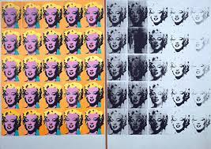

147. Marilyn Diptych. Andy Warhol. 1962 CE. Oil, acrylic, and silkscreen enamel on canvas.
- Form and Content
- Marilyn Monroe’s public face appears sequentially as if on a roll of film
- Fifty images from a film still from a movie, Niagara
- Social characteristics magnified: brilliance of blond hair, heavily applied lipstick, seductive expression
- Private persona of the individual submerged beneath the public face
- Marilyn’s public face appears highlighted by bold, artificial colors
- Left, in color, represents her in life; right, in black and white, represents her in death; work done four months after her tragic death
- Repetition of faces reflects the repetition of the number of times Marilyn appeared before the public; sometimes overexposed, sometimes underexposed
- Materials and Technique
- Silkscreen printing technique applies photographic images in rectangular shapes onto a canvas background
- Silkscreen diminishes the role of shading and emphasizes broad planes and unmodulated color
- Diptych format suggests almost a religious presence
- Context
- Cult of celebrity; Monroe was a famous movie star of the 1950s
- Repeated imagery drains the image of Monroe of meaning
- Reproduction of many denies the concept of the unique work of art